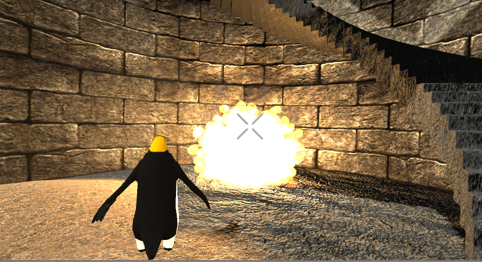
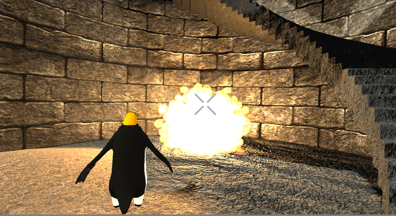

|

|

|

|
Gun N' Penguin is a zombie survival shooter game made in in Unity3d. We demonstrate the use of fractals in generating explosions for enemy death animations, build a 3D sound perspective system, and highlight a multitude of physical simulations. We discuss some of the difficulties we faced during our project development.
One of the main graphics component of our project is the explosions that happen when enemies are killed. Instead of using Unity’s particle system, we decided to try using C# scripted fractals to generate our explosion visuals. An explosion is kind of like a ball of fire that first expands then contracts, and I think that using fractals would be an interesting way to create this effect. To get started, I followed a tutorial on how to use recursion to generate basic fractals from the VR@Berkeley website. My script takes in a geometric shape (In our case a sphere), and recursively spawns children (more spheres) in different directions to create a fractal.
The first challenge is to generate a fractal in the shape of a sphere because that’s the shape explosions tend to take. If I just have each fractal (with the exception of the first one at depth 0 which has 6 children) generate a total of five children: above, below, rightward, leftward, and to the front of it, the final result after (depth = 5) recursions is a fractal takes the shape of a regular octahedron, with one vertex pointing in the direction of each axis, which was not what I wanted. In order to create a more spherical result, I took my 5 existing child directions, split them into 4 triangles, and created 4 new directions from interpolating the 3 points of each triangle. This way, each fractal generates 9 children that are spread out more evenly in a hemispheric shape. With the extra children, unity can only process (depth = 4) recursions without lagging, but the tradeoff is worth it because now the script generates a fractal in the form of a sphere. A modification that I made is that at depths 1 and 3, each fractal only makes the original 5 children. This helps reduce lag while letting the result fractal retain its spherical form. The fractal generates a total of 1+(1*6)+(6*9)+(54*5)+(270*9) = 2761 mini objects.
Now that I have a fractal in the shape of a sphere, the next challenge is to give it the colors of an explosion. In an explosion, the center is more yellow while the outer edges are more orange. I first tried creating this effect by making the depth 0 to 3 children yellow and making the depth 4 children orange. The result was a solid yellow cluster of spheres with some specs of orange around it, which looked really ugly so I had to try something different. Instead of applying a texture of solid color to my spheres, I used a transparent texture with a orange tint. This worked unexpectedly well. In the center of the fractal where most of the shapes overlap, the overlapping transparent textures created a really bright yellow color at the center which shifts to orange as you approach the edges where less texture density resulted in less overlap.
I wanted my explosion to expand and contract like a real explosion, so I set different expiration timers for each recursion layer. The first layers exist for 1 second, and each layer lasts shorter and shorter until it hits 0.1 second at depth = 4. Now the explosion expands and contracts smoothly. Thanks to the transparent textures I used, the color effects of having a bright center and orange edges persists even as the outer layers expire and disappear.
Now that the fractal looks decently like an explosion, I started to work on the lighting effects so that the explosion illuminates its surroundings. The light from the explosion should go in all directions, so I chose to work with point light sources and got started by deciding on the color, intensity, and range of the light. After we got those values down, I tested some different approaches to putting the light into the explosion. The first method was to spawn one big point light source at the center of the fractal that starts with the first sphere and lasts the duration of the explosion. It looked okay, but a little boring. It lacked the flickering light effect that explosions tend to have as their forms rapidly change. Then I tried putting a light source on multiple selected children at every depth, which unfortunately was too much for unity to handle. What I settled with was putting a light source at each of the six children at depth = 1. Since there is a tiny instant in time between the creation (and deletion) of each of these six children, the lights together create a flickering effect on its surroundings as the explosion expands and also as the explosion ends.
Finally, I scaled the explosion’s size to that of the object exploding and added a burst of smoke using Unity’s particle system. I also added some randomization to children size so that each explosion looks slightly different. With all the coding and special effects completed, I started trying out different base meshes for the fractal other than the sphere. Each mesh I tried resulted in a completely different kind of explosion and I’ll list a few of the most notable ones. Using a curved cylinder mesh turned the explosion into a spiral of flame. Using a tree branch created a flaming sea urchin. Using a very small leaf mesh resulted in thousands of specs of fiery dust. Using a more rectangular mesh gave a sort of pixelated effect like the kind of explosion you would see in a 90’s video game. The wide variety of different fractal explosions that could be generated using the same code was what surprised me the most about this project.
|

|
|
|

|
Similarly, to create the game over pop-up, we create an animation in the UI to change the transparency and scaling (size) of the game over screen to create a smooth transition from gameplay to a static game over. When the player loses all of their health, they go into the death animation and are unable to move any more.
When an enemy dies, it explodes, and we want to play an "BOOM!" sound to accompany our animation. Simply playing the audio clip when the player kills an enemy is unrealistic, so we wrote a script to determine where the audio clip is played in 3D space. We determined the location via linear interpolation: $$0.9f \cdot \text{Camera.main.transform.position} + 0.1f \cdot \text{transform.position}$$
Although this is a shooter game, the player controls are more or less like a car (ie. you can go forward and backwards, but "A" and "D" rotate the player model counter-clockwise and clockwise about the model's "up axis" respectively).

|
|
We implemented the shooting interaction using raycasts. Similar to what we've learned in CS 184, we can cast a ray from the camera to test for line-of-sign intersection with any colliders in front of the crosshair. When the player taps left click, a ray is generated from the camera-crosshair position within a particular range. Also, I added point light to all the particles in particle system to simulate gun’s muzzle. Whenever the play shoots, we create a point light on the muzzle and bullet shells fall to simulate a gunshot. Additionally, a delay is added to the player's shooting action so that the player is not overpowered.
We also implement the capability to switch between third and first person view. This is done by creating two cameras and assigning the switch of displays to a keybind.
.
Worked on animation state diagrams for both player and enemies. Made the game over screen. Applied enemy ai and implemented game stats. Wrote webpage.
Wrote the fractal explosions script and added smoke effects to the explosions.